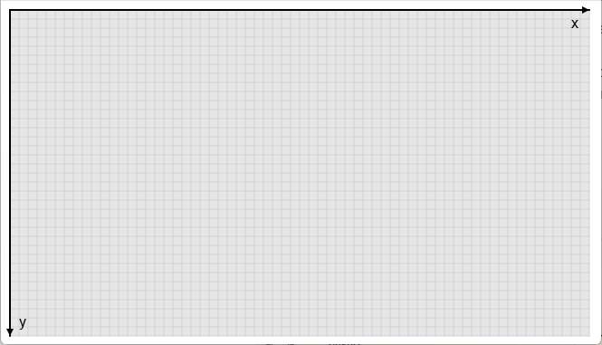
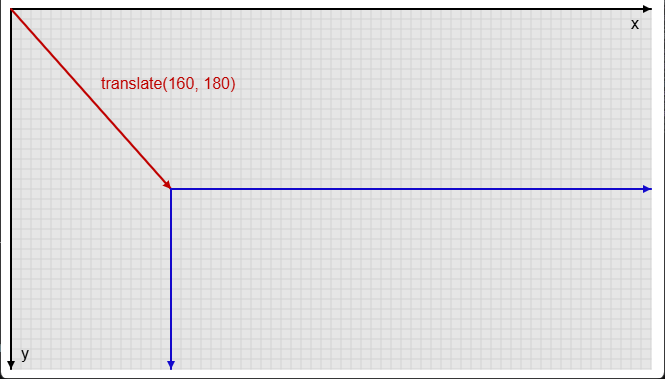
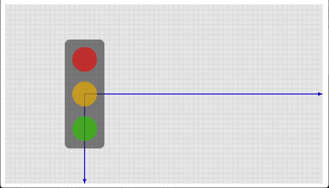
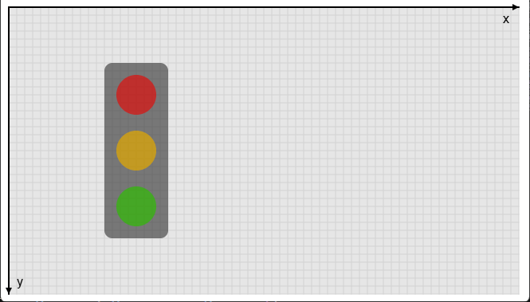

Aside: translate(), push() and pop()
Not used in this sketch — displayBall() only ever draws one shape, so there's nothing to offset.
But the House and Cars projects (see Projects, below) both build an object out of several
shapes, and by this stage every shape's position has been written by hand as h.x + something,
h.y + something — repeated once per shape, inside the same function. translate(x, y) moves
p5's drawing origin: call it once, and every coordinate used by shapes drawn after it is measured
from the new origin instead of (0, 0) — so each shape's position becomes a plain, fixed offset,
with no arithmetic needed at all.
Every p5 canvas starts out with the same coordinate system: (0, 0) at the top-left corner, x
increasing to the right, y increasing downwards. Every coordinate in every drawing call —
circle(x, y, ...), rect(x, y, ...), and so on — is measured from that origin, unless something
has moved it.

translate(x, y) is that "something" — it moves the origin. translate(160, 180) shifts it from
(0, 0) to (160, 180); the new x and y axes run from there, in the same directions as before,
just starting from a different point.

Every shape drawn after that call is measured from the new origin, not the old one. Here, a
traffic light is drawn using the same plain coordinates createTrafficLight() always uses —
(0, -70), (0, 0), (0, 70) for its three balls — but because translate(160, 180) has already
run, (0, 0) now means the point marked below, where the amber light sits, not the top-left corner
of the canvas.

pop() undoes the translate() — the origin snaps back to where it was before the matching
push(), ready for the next thing to be drawn (a second traffic light, say) without carrying the
first one's offset along with it.

A worked example: src/extras/08-traffic-light/sketch.js
(open index.html alongside it to run it). It reuses createBall() and displayBall()
completely unchanged — a traffic light is just three balls — and adds two functions that group
them:
function createTrafficLight(x, y) {
let t = { x: x, y: y };
// Each ball's position is a small, fixed offset from the traffic
// light's own (0, 0) — not from its actual on-canvas position. That's
// only true because displayTrafficLight() translates to (x, y) before
// drawing any of them.
t.red = createBall(0, -70, 50, color(255, 0, 0));
t.amber = createBall(0, 0, 50, color(255, 180, 0));
t.green = createBall(0, 70, 50, color(0, 200, 0));
return t;
}
function displayTrafficLight(t) {
push(); // remember the current origin
translate(t.x, t.y); // move the origin to this light's position
noStroke();
fill(40);
rect(-40, -110, 80, 220, 10); // the housing, drawn relative to (0, 0)
displayBall(t.red); // each ball still just draws itself —
displayBall(t.amber); // it has no idea the origin has moved
displayBall(t.green);
pop(); // restore the origin for whatever's next
}push() saves p5's current drawing state — including the current origin — before the
translation; pop() restores exactly that saved state afterwards. Without pop(), the
translation would carry over into whatever gets drawn next — try calling displayTrafficLight()
twice with pop() commented out, for both lights, and see what happens to the second one. push()
and pop() are always used as a matched pair, bracketing the part of the code that needs a
temporary change. The full sketch draws two traffic lights, at different positions, entirely from
that one pair of functions.